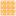

<!doctype html>
<html lang="en">
    <head>
        <meta charset="utf-8">
        <meta http-equiv="X-UA-Compatible" content="IE=edge">
        <meta name="viewport" content="initial-scale=1,user-scalable=no,maximum-scale=1,width=device-width">
        <meta name="mobile-web-app-capable" content="yes">
        <meta name="apple-mobile-web-app-capable" content="yes">
        <link rel="stylesheet" href="css/leaflet.css">
        <link rel="stylesheet" href="css/qgis2web.css"><link rel="stylesheet" href="css/fontawesome-all.min.css">
        <link rel="stylesheet" href="css/leaflet-control-geocoder.Geocoder.css">
        <link rel="stylesheet" href="css/leaflet-measure.css">
        <style>
        html, body, #map {
            width: 100%;
            height: 100%;
            padding: 0;
            margin: 0;
        }
        </style>
        <title></title>
    </head>
    <body>
        <div id="map">
        </div>
        <script src="js/qgis2web_expressions.js"></script>
        <script src="js/leaflet.js"></script>
        <script src="js/leaflet.rotatedMarker.js"></script>
        <script src="js/leaflet.pattern.js"></script>
        <script src="js/leaflet-hash.js"></script>
        <script src="js/Autolinker.min.js"></script>
        <script src="js/rbush.min.js"></script>
        <script src="js/labelgun.min.js"></script>
        <script src="js/labels.js"></script>
        <script src="js/leaflet-control-geocoder.Geocoder.js"></script>
        <script src="js/leaflet-measure.js"></script>
        <script src="data/Label_0.js"></script>
        <script src="data/INDIA_2.js"></script>
        <script src="data/Negligible_3.js"></script>
        <script src="data/115_4.js"></script>
        <script src="data/1645_5.js"></script>
        <script src="data/4675_6.js"></script>
        <script src="data/Morethan75_7.js"></script>
        <script>
        var map = L.map('map', {
            zoomControl:true, maxZoom:28, minZoom:1
        })
        var hash = new L.Hash(map);
        map.attributionControl.setPrefix('<a href="https://github.com/tomchadwin/qgis2web" target="_blank">qgis2web</a> &middot; <a href="https://leafletjs.com" title="A JS library for interactive maps">Leaflet</a> &middot; <a href="https://qgis.org">QGIS</a>');
        var autolinker = new Autolinker({truncate: {length: 30, location: 'smart'}});
        function removeEmptyRowsFromPopupContent(content, feature) {
         var tempDiv = document.createElement('div');
         tempDiv.innerHTML = content;
         var rows = tempDiv.querySelectorAll('tr');
         for (var i = 0; i < rows.length; i++) {
             var td = rows[i].querySelector('td.visible-with-data');
             var key = td ? td.id : '';
             if (td && td.classList.contains('visible-with-data') && feature.properties[key] == null) {
                 rows[i].parentNode.removeChild(rows[i]);
             }
         }
         return tempDiv.innerHTML;
        }
        document.querySelector(".leaflet-popup-pane").addEventListener("load", function(event) {
          var tagName = event.target.tagName,
            popup = map._popup;
          // Also check if flag is already set.
          if (tagName === "IMG" && popup && !popup._updated) {
            popup._updated = true; // Set flag to prevent looping.
            popup.update();
          }
        }, true);
        var measureControl = new L.Control.Measure({
            position: 'topleft',
            primaryLengthUnit: 'feet',
            secondaryLengthUnit: 'miles',
            primaryAreaUnit: 'sqfeet',
            secondaryAreaUnit: 'sqmiles'
        });
        measureControl.addTo(map);
        document.getElementsByClassName('leaflet-control-measure-toggle')[0]
        .innerHTML = '';
        document.getElementsByClassName('leaflet-control-measure-toggle')[0]
        .className += ' fas fa-ruler';
        var bounds_group = new L.featureGroup([]);
        function setBounds() {
            if (bounds_group.getLayers().length) {
                map.fitBounds(bounds_group.getBounds());
            }
        }
        function pop_Label_0(feature, layer) {
            var popupContent = '<table>\
                    <tr>\
                        <td colspan="2">' + (feature.properties['id'] !== null ? autolinker.link(feature.properties['id'].toLocaleString()) : '') + '</td>\
                    </tr>\
                    <tr>\
                        <td colspan="2">' + (feature.properties['name'] !== null ? autolinker.link(feature.properties['name'].toLocaleString()) : '') + '</td>\
                    </tr>\
                </table>';
            layer.bindPopup(popupContent, {maxHeight: 400});
            var popup = layer.getPopup();
            var content = popup.getContent();
            var updatedContent = removeEmptyRowsFromPopupContent(content, feature);
            popup.setContent(updatedContent);
        }

        function style_Label_0_0() {
            return {
                pane: 'pane_Label_0',
                opacity: 1,
                color: 'rgba(247,252,245,1.0)',
                dashArray: '',
                lineCap: 'butt',
                lineJoin: 'miter',
                weight: 1, 
                fillOpacity: 0,
                interactive: true,
            }
        }
        map.createPane('pane_Label_0');
        map.getPane('pane_Label_0').style.zIndex = 400;
        map.getPane('pane_Label_0').style['mix-blend-mode'] = 'normal';
        var layer_Label_0 = new L.geoJson(json_Label_0, {
            attribution: '',
            interactive: true,
            dataVar: 'json_Label_0',
            layerName: 'layer_Label_0',
            pane: 'pane_Label_0',
            onEachFeature: pop_Label_0,
            style: style_Label_0_0,
        });
        bounds_group.addLayer(layer_Label_0);
        map.addLayer(layer_Label_0);
        map.createPane('pane_OpenStreetMap_1');
        map.getPane('pane_OpenStreetMap_1').style.zIndex = 401;
        var layer_OpenStreetMap_1 = L.tileLayer('https://tile.openstreetmap.org/{z}/{x}/{y}.png', {
            pane: 'pane_OpenStreetMap_1',
            opacity: 1.0,
            attribution: '',
            minZoom: 1,
            maxZoom: 28,
            minNativeZoom: 0,
            maxNativeZoom: 19
        });
        layer_OpenStreetMap_1;
        map.addLayer(layer_OpenStreetMap_1);
        function pop_INDIA_2(feature, layer) {
            var popupContent = '<table>\
                    <tr>\
                        <td colspan="2">' + (feature.properties['STATE'] !== null ? autolinker.link(feature.properties['STATE'].toLocaleString()) : '') + '</td>\
                    </tr>\
                </table>';
            layer.bindPopup(popupContent, {maxHeight: 400});
            var popup = layer.getPopup();
            var content = popup.getContent();
            var updatedContent = removeEmptyRowsFromPopupContent(content, feature);
            popup.setContent(updatedContent);
        }

        function style_INDIA_2_0() {
            return {
                pane: 'pane_INDIA_2',
                opacity: 1,
                color: 'rgba(35,35,35,1.0)',
                dashArray: '',
                lineCap: 'butt',
                lineJoin: 'miter',
                weight: 3.0, 
                fillOpacity: 0,
                interactive: true,
            }
        }
        map.createPane('pane_INDIA_2');
        map.getPane('pane_INDIA_2').style.zIndex = 402;
        map.getPane('pane_INDIA_2').style['mix-blend-mode'] = 'normal';
        var layer_INDIA_2 = new L.geoJson(json_INDIA_2, {
            attribution: '',
            interactive: true,
            dataVar: 'json_INDIA_2',
            layerName: 'layer_INDIA_2',
            pane: 'pane_INDIA_2',
            onEachFeature: pop_INDIA_2,
            style: style_INDIA_2_0,
        });
        bounds_group.addLayer(layer_INDIA_2);
        map.addLayer(layer_INDIA_2);
        function pop_Negligible_3(feature, layer) {
            var popupContent = '<table>\
                    <tr>\
                        <th scope="row">id</th>\
                        <td class="visible-with-data" id="id">' + (feature.properties['id'] !== null ? autolinker.link(feature.properties['id'].toLocaleString()) : '') + '</td>\
                    </tr>\
                </table>';
            layer.bindPopup(popupContent, {maxHeight: 400});
            var popup = layer.getPopup();
            var content = popup.getContent();
            var updatedContent = removeEmptyRowsFromPopupContent(content, feature);
            popup.setContent(updatedContent);
        }

        function style_Negligible_3_0() {
            return {
                pane: 'pane_Negligible_3',
                opacity: 1,
                color: 'rgba(255,255,255,0.5)',
                dashArray: '',
                lineCap: 'butt',
                lineJoin: 'miter',
                weight: 1, 
                fill: true,
                fillOpacity: 1,
                fillColor: 'rgba(253,191,111,0.5)',
                interactive: true,
            }
        }
        map.createPane('pane_Negligible_3');
        map.getPane('pane_Negligible_3').style.zIndex = 403;
        map.getPane('pane_Negligible_3').style['mix-blend-mode'] = 'normal';
        var layer_Negligible_3 = new L.geoJson(json_Negligible_3, {
            attribution: '',
            interactive: true,
            dataVar: 'json_Negligible_3',
            layerName: 'layer_Negligible_3',
            pane: 'pane_Negligible_3',
            onEachFeature: pop_Negligible_3,
            style: style_Negligible_3_0,
        });
        bounds_group.addLayer(layer_Negligible_3);
        map.addLayer(layer_Negligible_3);
        function pop_115_4(feature, layer) {
            var popupContent = '<table>\
                    <tr>\
                        <th scope="row">id</th>\
                        <td class="visible-with-data" id="id">' + (feature.properties['id'] !== null ? autolinker.link(feature.properties['id'].toLocaleString()) : '') + '</td>\
                    </tr>\
                </table>';
            layer.bindPopup(popupContent, {maxHeight: 400});
            var popup = layer.getPopup();
            var content = popup.getContent();
            var updatedContent = removeEmptyRowsFromPopupContent(content, feature);
            popup.setContent(updatedContent);
        }

        function style_115_4_0() {
            return {
                pane: 'pane_115_4',
                opacity: 1,
                color: 'rgba(35,35,35,0.5)',
                dashArray: '',
                lineCap: 'butt',
                lineJoin: 'miter',
                weight: 1, 
                fill: true,
                fillOpacity: 1,
                fillColor: 'rgba(204,215,39,0.5)',
                interactive: true,
            }
        }
        map.createPane('pane_115_4');
        map.getPane('pane_115_4').style.zIndex = 404;
        map.getPane('pane_115_4').style['mix-blend-mode'] = 'normal';
        var layer_115_4 = new L.geoJson(json_115_4, {
            attribution: '',
            interactive: true,
            dataVar: 'json_115_4',
            layerName: 'layer_115_4',
            pane: 'pane_115_4',
            onEachFeature: pop_115_4,
            style: style_115_4_0,
        });
        bounds_group.addLayer(layer_115_4);
        map.addLayer(layer_115_4);
        function pop_1645_5(feature, layer) {
            var popupContent = '<table>\
                    <tr>\
                        <th scope="row">id</th>\
                        <td class="visible-with-data" id="id">' + (feature.properties['id'] !== null ? autolinker.link(feature.properties['id'].toLocaleString()) : '') + '</td>\
                    </tr>\
                </table>';
            layer.bindPopup(popupContent, {maxHeight: 400});
            var popup = layer.getPopup();
            var content = popup.getContent();
            var updatedContent = removeEmptyRowsFromPopupContent(content, feature);
            popup.setContent(updatedContent);
        }

        function style_1645_5_0() {
            return {
                pane: 'pane_1645_5',
                opacity: 1,
                color: 'rgba(35,35,35,0.5)',
                dashArray: '',
                lineCap: 'butt',
                lineJoin: 'miter',
                weight: 1, 
                fill: true,
                fillOpacity: 1,
                fillColor: 'rgba(166,206,227,0.5)',
                interactive: true,
            }
        }
        map.createPane('pane_1645_5');
        map.getPane('pane_1645_5').style.zIndex = 405;
        map.getPane('pane_1645_5').style['mix-blend-mode'] = 'normal';
        var layer_1645_5 = new L.geoJson(json_1645_5, {
            attribution: '',
            interactive: true,
            dataVar: 'json_1645_5',
            layerName: 'layer_1645_5',
            pane: 'pane_1645_5',
            onEachFeature: pop_1645_5,
            style: style_1645_5_0,
        });
        bounds_group.addLayer(layer_1645_5);
        map.addLayer(layer_1645_5);
        function pop_4675_6(feature, layer) {
            var popupContent = '<table>\
                    <tr>\
                        <th scope="row">id</th>\
                        <td class="visible-with-data" id="id">' + (feature.properties['id'] !== null ? autolinker.link(feature.properties['id'].toLocaleString()) : '') + '</td>\
                    </tr>\
                </table>';
            layer.bindPopup(popupContent, {maxHeight: 400});
            var popup = layer.getPopup();
            var content = popup.getContent();
            var updatedContent = removeEmptyRowsFromPopupContent(content, feature);
            popup.setContent(updatedContent);
        }

        function style_4675_6_0() {
            return {
                pane: 'pane_4675_6',
                opacity: 1,
                color: 'rgba(35,35,35,0.5)',
                dashArray: '',
                lineCap: 'butt',
                lineJoin: 'miter',
                weight: 1, 
                fill: true,
                fillOpacity: 1,
                fillColor: 'rgba(255,127,0,0.5)',
                interactive: true,
            }
        }
        map.createPane('pane_4675_6');
        map.getPane('pane_4675_6').style.zIndex = 406;
        map.getPane('pane_4675_6').style['mix-blend-mode'] = 'normal';
        var layer_4675_6 = new L.geoJson(json_4675_6, {
            attribution: '',
            interactive: true,
            dataVar: 'json_4675_6',
            layerName: 'layer_4675_6',
            pane: 'pane_4675_6',
            onEachFeature: pop_4675_6,
            style: style_4675_6_0,
        });
        bounds_group.addLayer(layer_4675_6);
        map.addLayer(layer_4675_6);
        function pop_Morethan75_7(feature, layer) {
            var popupContent = '<table>\
                    <tr>\
                        <th scope="row">id</th>\
                        <td class="visible-with-data" id="id">' + (feature.properties['id'] !== null ? autolinker.link(feature.properties['id'].toLocaleString()) : '') + '</td>\
                    </tr>\
                </table>';
            layer.bindPopup(popupContent, {maxHeight: 400});
            var popup = layer.getPopup();
            var content = popup.getContent();
            var updatedContent = removeEmptyRowsFromPopupContent(content, feature);
            popup.setContent(updatedContent);
        }

        function style_Morethan75_7_0() {
            return {
                pane: 'pane_Morethan75_7',
                opacity: 1,
                color: 'rgba(35,35,35,0.5)',
                dashArray: '',
                lineCap: 'butt',
                lineJoin: 'miter',
                weight: 1, 
                fill: true,
                fillOpacity: 1,
                fillColor: 'rgba(227,26,28,0.5)',
                interactive: true,
            }
        }
        map.createPane('pane_Morethan75_7');
        map.getPane('pane_Morethan75_7').style.zIndex = 407;
        map.getPane('pane_Morethan75_7').style['mix-blend-mode'] = 'normal';
        var layer_Morethan75_7 = new L.geoJson(json_Morethan75_7, {
            attribution: '',
            interactive: true,
            dataVar: 'json_Morethan75_7',
            layerName: 'layer_Morethan75_7',
            pane: 'pane_Morethan75_7',
            onEachFeature: pop_Morethan75_7,
            style: style_Morethan75_7_0,
        });
        bounds_group.addLayer(layer_Morethan75_7);
        map.addLayer(layer_Morethan75_7);
        var osmGeocoder = new L.Control.Geocoder({
            collapsed: true,
            position: 'topleft',
            text: 'Search',
            title: 'Testing'
        }).addTo(map);
        document.getElementsByClassName('leaflet-control-geocoder-icon')[0]
        .className += ' fa fa-search';
        document.getElementsByClassName('leaflet-control-geocoder-icon')[0]
        .title += 'Search for a place';
        var baseMaps = {};
        L.control.layers(baseMaps,{' More than 75%': layer_Morethan75_7,' 46 ते 75': layer_4675_6,' 16 ते 45': layer_1645_5,' 1 ते 15': layer_115_4,' Negligible': layer_Negligible_3,' INDIA': layer_INDIA_2,"OpenStreetMap": layer_OpenStreetMap_1,' Label': layer_Label_0,},{collapsed:false}).addTo(map);
        setBounds();
        var i = 0;
        layer_Label_0.eachLayer(function(layer) {
            var context = {
                feature: layer.feature,
                variables: {}
            };
            layer.bindTooltip((layer.feature.properties['name'] !== null?String('<div style="color: #e31a1c; font-size: 20pt; font-weight: bold; font-family: \'MS Shell Dlg 2\', sans-serif;">' + layer.feature.properties['name']) + '</div>':''), {permanent: true, offset: [-0, -16], className: 'css_Label_0'});
            labels.push(layer);
            totalMarkers += 1;
              layer.added = true;
              addLabel(layer, i);
              i++;
        });
        var i = 0;
        layer_INDIA_2.eachLayer(function(layer) {
            var context = {
                feature: layer.feature,
                variables: {}
            };
            layer.bindTooltip((layer.feature.properties['STATE'] !== null?String('<div style="color: #000000; font-size: 10pt; font-family: \'MS Shell Dlg 2\', sans-serif;">' + layer.feature.properties['STATE']) + '</div>':''), {permanent: true, offset: [-0, -16], className: 'css_INDIA_2'});
            labels.push(layer);
            totalMarkers += 1;
              layer.added = true;
              addLabel(layer, i);
              i++;
        });
        resetLabels([layer_Label_0,layer_INDIA_2]);
        map.on("zoomend", function(){
            resetLabels([layer_Label_0,layer_INDIA_2]);
        });
        map.on("layeradd", function(){
            resetLabels([layer_Label_0,layer_INDIA_2]);
        });
        map.on("layerremove", function(){
            resetLabels([layer_Label_0,layer_INDIA_2]);
        });
        </script>
    </body>
</html>
